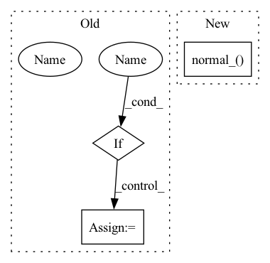

Pattern ID :14671

Before Change
gamma = gamma_scale * drop_prob * total_size / clipped_block_size ** 2 / (
(W - block_size + 1) * (H - block_size + 1))
if batchwise:
// one mask for whole batch, quite a bit faster
block_mask = torch.rand((1, C, H, W), dtype=x.dtype, device=x.device) < gamma
else:
// mask per batch element
block_mask = torch.rand_like(x) < gamma
After Change
block_mask.to(x.dtype), kernel_size=clipped_block_size, stride=1, padding=clipped_block_size // 2)
if with_noise:
normal_noise = torch.empty_like(x).normal_()
if inplace:
x.mul_(1. - block_mask).add_(normal_noise * block_mask)
else:
x = x * (1. - block_mask) + normal_noise * block_mask
In pattern: SUPERPATTERN
Frequency: 3
Non-data size: 3
Instances
Fragment ID: 48280530
Project Name: feng-lab/pytorch-image-models
Commit Name: b27c21b09a2d92b86e465f6ecd3ec11bf3eaa270
Time: 2022-01-06
Author: rwightman@gmail.com
File Name: timm/models/layers/drop.py
M Class Name: AnonimousClass
N Class Name: AnonimousClass
M Method Name: drop_block_fast_2d(6)
N Method Name: drop_block_fast_2d(7)
M Parent Class:
N Parent Class:
M File Name: timm/models/layers/drop.py
N File Name: timm/models/layers/drop.py
M Start Line: 72
M End Line: 94
N Start Line: 81
N End Line: 89
'>
Before Change
def __init__(self, backbone, num_classes, use_bottleneck=True, bottleneck_dim=1024, head_bottleneck_dim=1024):
super(Classifier, self).__init__()
self.backbone = backbone
if use_bottleneck:
self.bottleneck = nn.Sequential(
nn.Linear(backbone.out_features, bottleneck_dim),
nn.BatchNorm1d(bottleneck_dim),
nn.ReLU(),
nn.Dropout(0.5)
)
self.bottleneck[0].weight.data.normal_(0, 0.005)
self.bottleneck[0].bias.data.fill_(0.1)
in_features = bottleneck_dim
else:
self.bottleneck = nn.Identity()
in_features = backbone.out_features
After Change
for dep in range(2):
self.head[dep * 3].weight.data.normal_(0, 0.01)
self.head[dep * 3].bias.data.fill_(0.0)
self.adv_head[dep * 3].weight.data.normal_(0, 0.01)
self.adv_head[dep * 3].bias.data.fill_(0.0)
def forward(self, inputs, keep_adv_output=False):
'>
Fragment ID: 48280531
Project Name: thuml/transfer-learning-library
Commit Name: 6715ce965493b31f0defccaf6c0b1a654ffd4a0a
Time: 2020-03-11
Author: JiangJunguang1123@outlook.com
File Name: dalib/adaptation/mdd.py
M Class Name: Classifier
N Class Name: Classifier
M Method Name: __init__(5)
N Method Name: __init__(6)
M Parent Class: nn.Module
N Parent Class: nn.Module
M File Name: dalib/adaptation/mdd.py
N File Name: dalib/adaptation/mdd.py
M Start Line: 130
M End Line: 148
N Start Line: 81
N End Line: 113
'>
Before Change
gamma = gamma_scale * drop_prob * total_size / clipped_block_size ** 2 / (
(W - block_size + 1) * (H - block_size + 1))
if batchwise:
// one mask for whole batch, quite a bit faster
block_mask = torch.rand((1, C, H, W), dtype=x.dtype, device=x.device) < gamma
else:
// mask per batch element
block_mask = torch.rand_like(x) < gamma
After Change
block_mask.to(x.dtype), kernel_size=clipped_block_size, stride=1, padding=clipped_block_size // 2)
if with_noise:
normal_noise = torch.empty_like(x).normal_()
if inplace:
x.mul_(1. - block_mask).add_(normal_noise * block_mask)
else:
x = x * (1. - block_mask) + normal_noise * block_mask
'>
Fragment ID: 48280535
Project Name: feng-lab/pytorch-image-models
Commit Name: d04f2f137795017fc110ecf1084ffbfdf5a25747
Time: 2021-12-05
Author: rwightman@gmail.com
File Name: timm/models/layers/drop.py
M Class Name: AnonimousClass
N Class Name: AnonimousClass
M Method Name: drop_block_fast_2d(6)
N Method Name: drop_block_fast_2d(7)
M Parent Class:
N Parent Class:
M File Name: timm/models/layers/drop.py
N File Name: timm/models/layers/drop.py
M Start Line: 72
M End Line: 94
N Start Line: 81
N End Line: 89